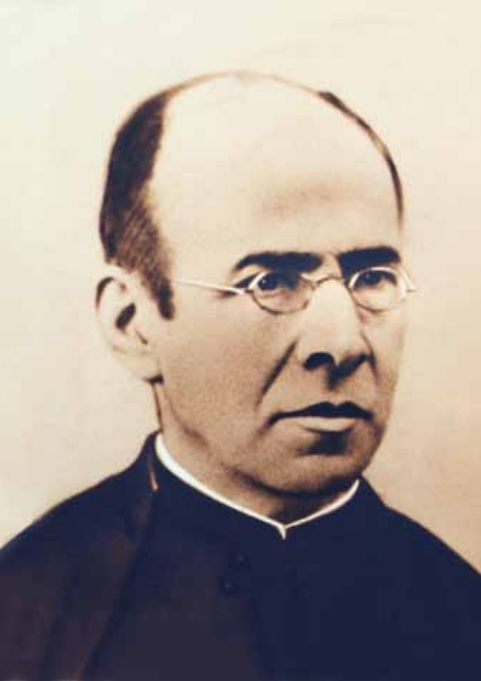
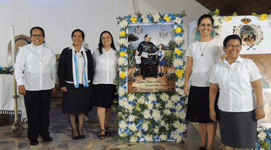

Descubre la vida y obra de San Faustino Míguez de la Encarnación, Sch. P., un sacerdote que unió la fe, la ciencia y la promoción de la educación integral.
Conocer su HistoriaNació el 24 de marzo de 1831 en Xamirás, Acebedo del Río (Orense, España). Su infancia en la aldea estuvo marcada por una sólida fe familiar, el trabajo agrícola y un vivo interés por ayudar a los necesitados.
Durante sus estudios en Celanova sintió la llamada al sacerdocio y a la vocación educativa siguiendo las huellas de San José de Calasanz. Ingresó en el noviciado escolapio de Madrid en 1850, emitiendo sus votos solemnes en 1853 y ordenándose sacerdote en 1856.
📍 Ver Xamirás en Google Maps
Fe y ciencia al servicio de la salud de los más vulnerables
En Guanabacoa (Cuba) destacó como docente de primaria y secundaria, comenzando a observar y sistematizar las propiedades curativas de las plantas locales.
De regreso a España, en el Real Monasterio de El Escorial y Sanlúcar de Barrameda, analizó los componentes medicinales de la flora para elaborar remedios accesibles para los enfermos pobres.
Analizó de manera científica las propiedades curativas de las aguas del manantial de Las Piletas, demostrando que la naturaleza es un don de Dios para el bienestar de la humanidad.

Sensibilizado ante la falta de oportunidades de educación para las niñas y jóvenes de Sanlúcar de Barrameda, fundó en 1885 la Congregación de las Hijas de la Divina Pastora (Instituto Calasancio).
Su meta fue garantizar una educación integral para la infancia y promover la dignidad de la mujer en la sociedad, continuando con el espíritu educativo escolapio de Calasanz.
Falleció en Getafe el 8 de marzo de 1925 y fue canonizado por el Papa Francisco en la Plaza de San Pedro el 15 de octubre de 2017.
Pon a prueba tus conocimientos sobre su vida, obra y legado calasancio.
Taller de Informática y Catequesis
Equipo N.º 3: Nicolás Hernández y Matías Cabaleiro
Año: 2026